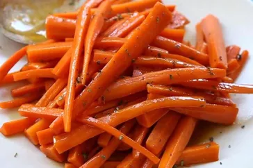

Glazed Carrots
Ingredients
- 2 pounds carrots, peeled and cut into sticks
- ¼ cup butter
- ¼ cup packed brown sugar
- ¼ teaspoon salt
- ⅛ teaspoon ground white pepper
- Step 1- Place carrots into a large saucepan; pour in enough water to reach depth of 1
inch and bring to a boil. Reduce heat to low, cover, and simmer carrots until
tender, 8 to 10 minutes. Drain and transfer to a bowl.
- Step 2- Melt butter in the same saucepan over low heat. Stir in brown sugar, salt, and
white pepper until dissolved. Add carrots to the saucepan and toss until coated
in the brown sugar mixture. Cook and stir until carrots are heated through and
fully coated with glaze, 1 to 3 more minutes.